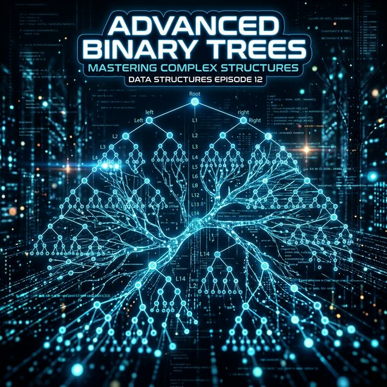

1. Array (Vetor)
A estrutura mais fundamental. É a base para quase todas as outras. Entenda a alocação sequencial.

Do linear ao relacional: a jornada definitiva para entender como o software organiza a realidade. Construa uma base sólida com sequências antes de explorar a complexidade das árvores e a conectividade infinita dos grafos.

A estrutura mais fundamental. É a base para quase todas as outras. Entenda a alocação sequencial.

Introduz o conceito de ponteiros e alocação dinâmica, resolvendo limitações dos arrays.

Lógica LIFO (Last In, First Out). Essencial para entender recursão e chamadas de função.
Lógica FIFO (First In, First Out). Escalonamento de processos e ordem de chegada.

Mapeamento chave-valor. O segredo da busca em tempo constante O(1).

O conceito geral de hierarquia: nós pais e nós filhos em sistemas complexos.

Especialização: cada nó tem no máximo 2 filhos. A base para algoritmos de busca.
O perigo da árvore torta: quando a eficiência se torna a mesma de uma lista ligada.
Regras de ordenação: menores à esquerda, maiores à direita. Buscas ultra-rápidas.

Definições cruciais sobre preenchimento de nós, essenciais para entender Heaps.
Estratégias AVL e Red-Black para garantir que a árvore nunca perca performance.
Árvore binária especial para filas de prioridade e algoritmos de ordenação eficientes.

A generalização suprema: nós (vértices) conectados por arestas em qualquer direção.
Conexões de mão única vs mão dupla. Entenda as relações em redes sociais e mapas.
Representação em memória: como desenhar grafos usando as estruturas que você já aprendeu.
O elo final: conectando todos os vértices sem ciclos. Onde árvores e grafos se tornam um só.